Art Direction & Team Leadership 美術統籌與團隊管理經驗。
17+ 年遊戲產業美術經驗，專精遊戲視覺風格制定、產品美術定位與整體品質控管，帶領 8 人內部美術團隊進行專案開發。
管理約 50% 外包美術製作流程，與技術美術、前端工程師及遊戲企劃跨部門協作，負責 Unity Atlas 與 DrawCall 效能優化。
導入 AI + 原畫整合流程以提升團隊製作效率並建立跨區美術與特效遠端外包團隊協作製作流程。
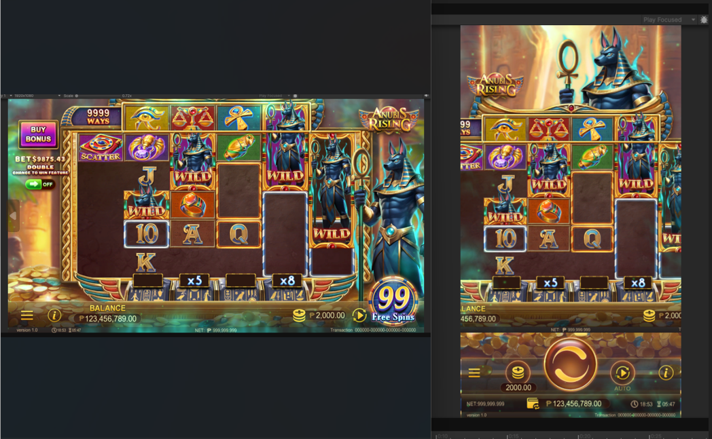
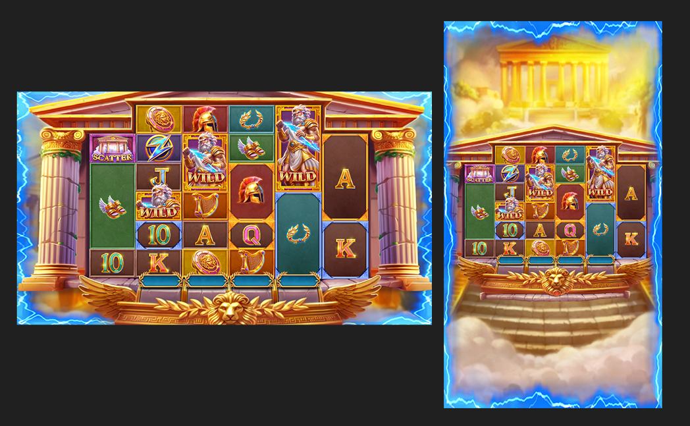
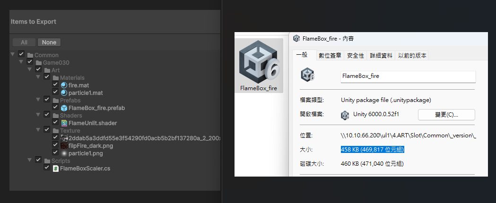
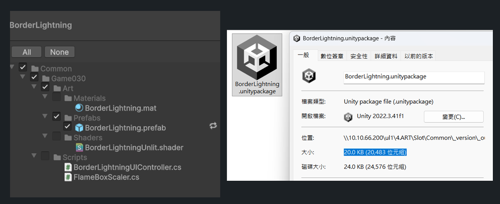
| 分類 | Shader 特效 | 傳統整頁特效 |
|---|---|---|
| 優點 | ・圖量資源占用低（小貼圖或噪聲圖） ・動態彈性高（程式可控尺寸/顏色/UV 扭曲） ・效能佳（GPU 即時計算，跨平台適用） ・可接遊戲數值驅動特效強度 |
・所見即所得，視覺質感穩定 ・細節可極致雕琢，藝術完全掌控 ・AI 可直接產生整頁或序列幀快速佈景 |
| 缺點 | ・需具 Shader/GPU 基礎與測試 ・設計思維偏程式化，初學成本較高 ・平台相容性需額外驗證（如 WebGL） |
・圖量資源較高、檔案肥大 ・彈性不足（顏色/大小固定） ・解析度綁定，泛用性較差 |
快速生成貼圖：透過 Stable Diffusion 或其他影像生成 AI，可快速產生高解析度貼圖（如火焰、煙霧、石材、布料、金屬紋理）。
自動化噪聲圖/遮罩圖：Shader 製作常需用到的 Noise/Mask，AI 可自動生成變化豐富的圖像。
AI動畫生成：可自動產出角色指定的動態影片，雖然目前僅提供影片格式，但能有效提取角色動作部件，轉換為可用於 SPINE 動畫的素材，顯著提升動作拆解與量產效率。
即時獲取程式碼：透過 GPT 快速取得 Unity Shader / C# 腳本範例。
自動化製作流程：可請 GPT 提供一鍵化流程腳本，加速 prefab、shader 配置。
錯誤排查協助：Shader 或腳本 bug 時，AI 能協助 debug。
多平台貼圖縮放與格式轉換：AI 批次輸出適合各平台的壓縮格式。
Shader 參數最佳化：GPT 建議精簡 Shader、降低 Draw Call。
動態測試：AI 提供測試腳本，快速檢查不同硬體的效果。
快速原型：AI 能短時間輸出多組效果圖或動畫，供比較。
版本管理：AI 可生成不同風格素材，幫助探索多樣性。
互動式教學：美術視覺化調整可邊問 GPT 技術問題，邊得到操作步驟，不像以往會因程式技術問題卡關。
降低學習門檻：美術可透過 GPT 學習 Shader 與腳本製作。
標準化流程文件：AI 整理技術文檔與教學手冊。
快速溝通橋樑：GPT 程式範例作為美術與程式的溝通基礎。
👉 結合 Stable Diffusion + GPT，形成閉環，雖然還需來回測試實作，但已加速迭代並降低成本。
背景：在快速變化的數位內容產業中，效率與創新是我們的核心驅動力。團隊已導入並積極測試 Gemini Banana .MJ.GPT各大廠AI技術，優化原畫製作流程、縮短週期並降低成本。
痛點：傳統原畫從概念、草圖到精修耗時且資源密集；面對高品質與快速交付的市場需求，迫切需要技術創新。
導入生成式 AI 技術時，企業常在「採用國際成熟大模型」與「自建訓練本地 SD」兩策略間取捨。以下從 人力、資金、維護、彈性 比較：
| 項目 | 採用國外大模型（如 Google Gemini Banana） | 自訓開源模型（Stable Diffusion / ComfyUI） |
|---|---|---|
| 前期投入 | 幾乎零部署，可直接使用；不需資料標註、訓練與硬體建構。 | 需投入 GPU/雲端算力並建數據流程，月費＋部屬工程時間曠時費日。 |
| 人力需求 | 1–2 位原畫師即可上線。 | 3–5 位工程/資料標註人員，且需長期維護。 |
| 產出效率 | 即時生成，API/雲端整合快。 | 訓練/微調週期長，導入與更新慢。 |
| 品質穩定度 | 依賴超大規模數據，泛化與一致性強。 | 高度依賴自有資料品質，易受偏差影響。 |
| 客製化彈性 | 以提示詞與參數快速變化，無需再訓練。 | 可完全控制權重風格，但需高技術與時間成本。 |
| 維護成本 | 由供應商維護升級；內部幾乎零維護。 | 需維護 GPU/儲存/升級，半年至一年可能重訓。 |
| 總體成本（年） | 授權/API 用量計費；約為自訓方案的10–20%。 | 含硬體/電費/人力/標註/維運，約為國外模型 4–6 倍。 |
在當今快速變化的數位內容產業中，效率與創新是我們保持競爭力的核心驅動力。我們的原畫團隊已成功導入並積極測試各大廠AI技術，旨在透過其卓越的圖像生成能力，顯著優化我們的原畫製作流程，並為公司帶來前所未有的效率提升與成本節約。
傳統的原畫製作流程，從概念發想、草圖勾勒到精細繪製，往往耗時且資源密集。為了應對市場對高品質內容日益增長的需求，同時確保專案進度，我們一直在尋求技術創新以突破現有瓶頸。
AI 輔助工具的策略性選擇：為何是 Gemini Banana .MJ.GPT各大廠AI技術？
當前市場上有許多開源的生成式 AI 工具，如基於 Stable Diffusion (SD) 框架的 ComfyUI。這些工具雖然強大，但普遍存在以下挑戰：
高昂的前期投入： 部署 ComfyUI 或 SD 這類工具，往往需要企業投入大量的人力與時間成本進行模型訓練、微調，以及複雜的工作流搭建。這包括收集與標註龐大的專屬數據集、持續的硬體維護與升級，以及專業技術人員的長期維護。對於追求快速迭代和高效產出的創意團隊而言，這是一筆不小的隱性開銷。
複雜的學習曲線： 這些工具通常具備高度的客製化彈性，但其複雜的節點式工作流和參數調整，也意味著較高的學習門檻和更長的上手時間，這會分散原畫師的精力，並可能減緩初期導入的效果。
相較之下，Gemini Banana .MJ.GPT各大廠AI技術， 則提供了一個更為精簡、高效且開箱即用的解決方案，其獨特優勢體現在：
從概念到視覺的瞬時轉化，輕量化部署： 透過 大廠AI技術，我們的原畫師能將線稿、構圖或文字描述即時轉化為高品質、風格一致的圖素，極大縮短從「想法」到「初步視覺呈現」的時間。
線稿與構圖的智慧延伸，操作直觀： 大廠AI技術 能基於簡易線稿快速生成多樣化圖素，介面直觀，讓原畫師專注創作發想而非工具調校。
顯著提升生產效率與專注度： AI 生成基礎圖素，再於 Photoshop 精修整合，初步數據顯示可節省約半數繪製時間。
優化資源配置與成本效益： 以更短週期與更低維運投入換取更高產能，避免自建系統的沈沒成本。
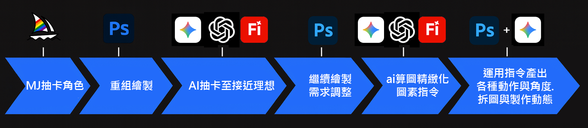
👉 結合 Stable Diffusion + GPT，形成閉環，運用指令產生各種動作與角度，最終依照需求拆圖與製作動態。
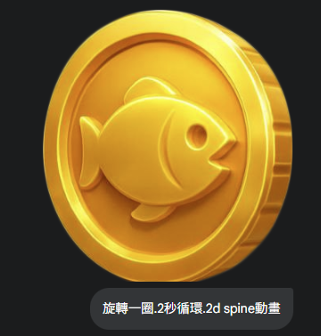
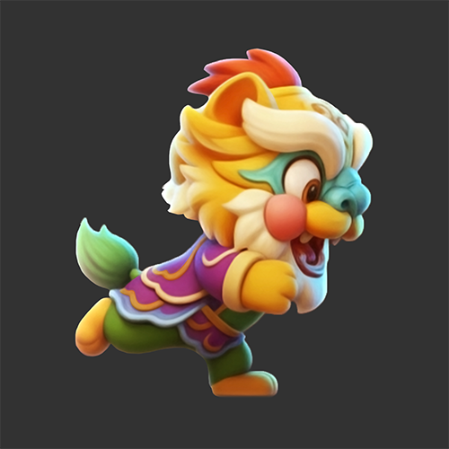
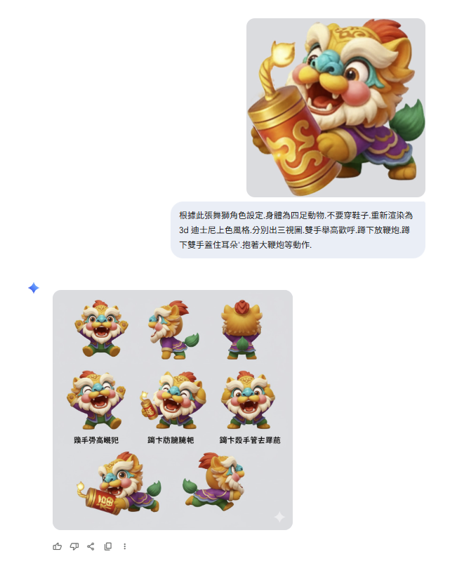
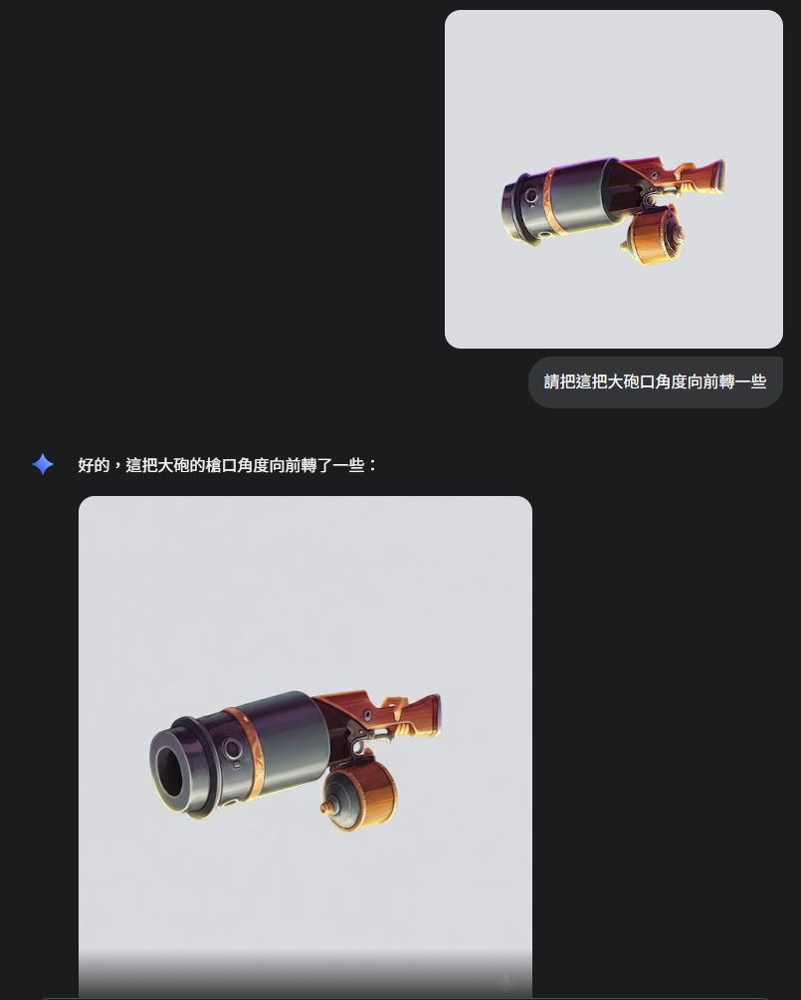
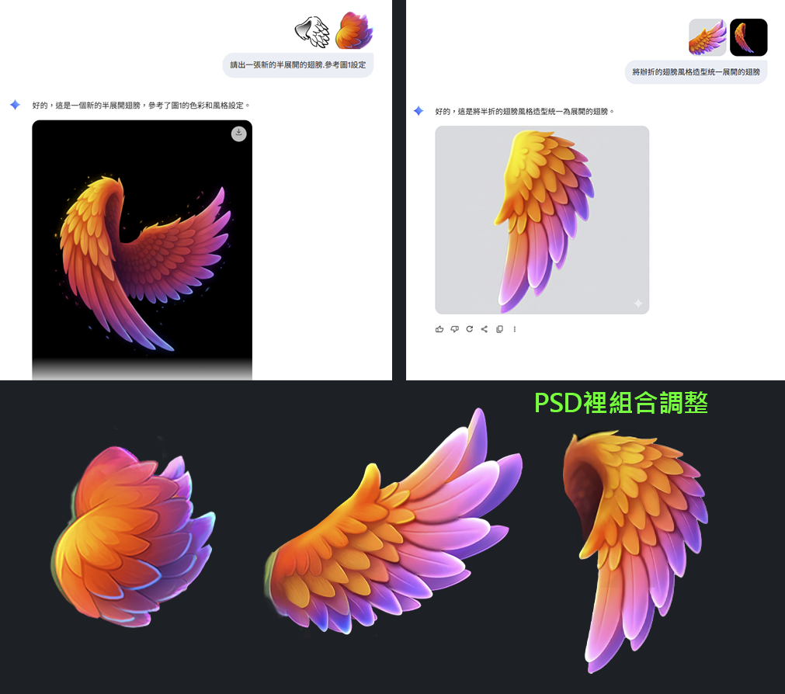
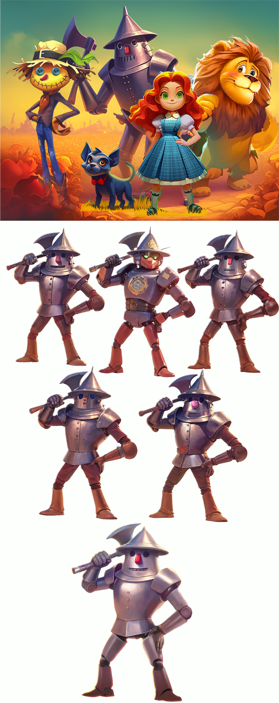
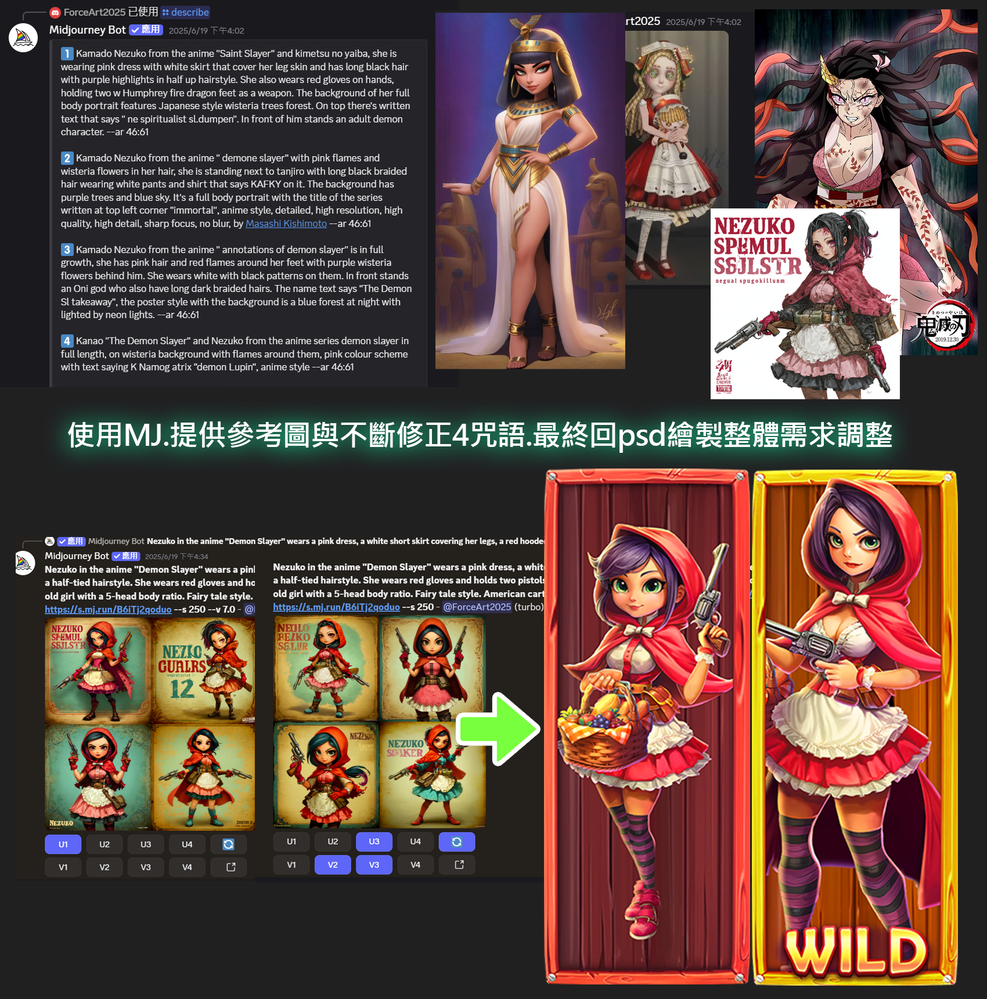
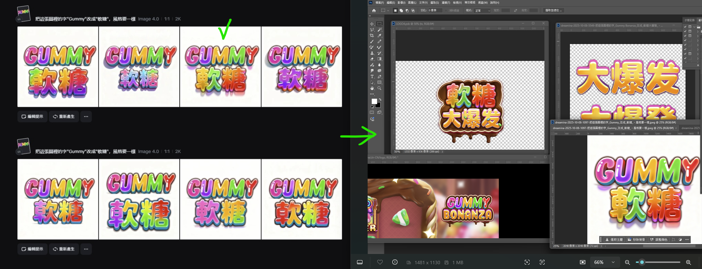